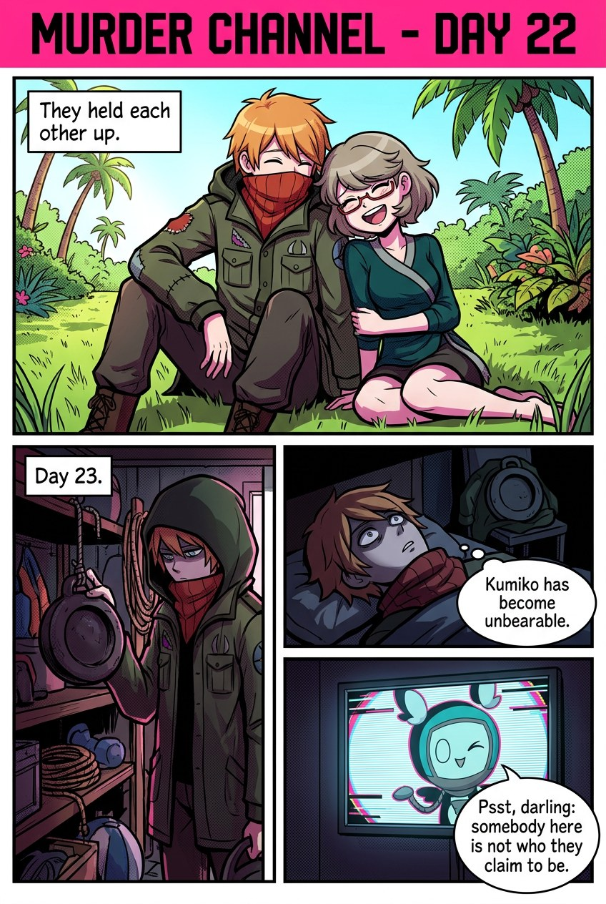
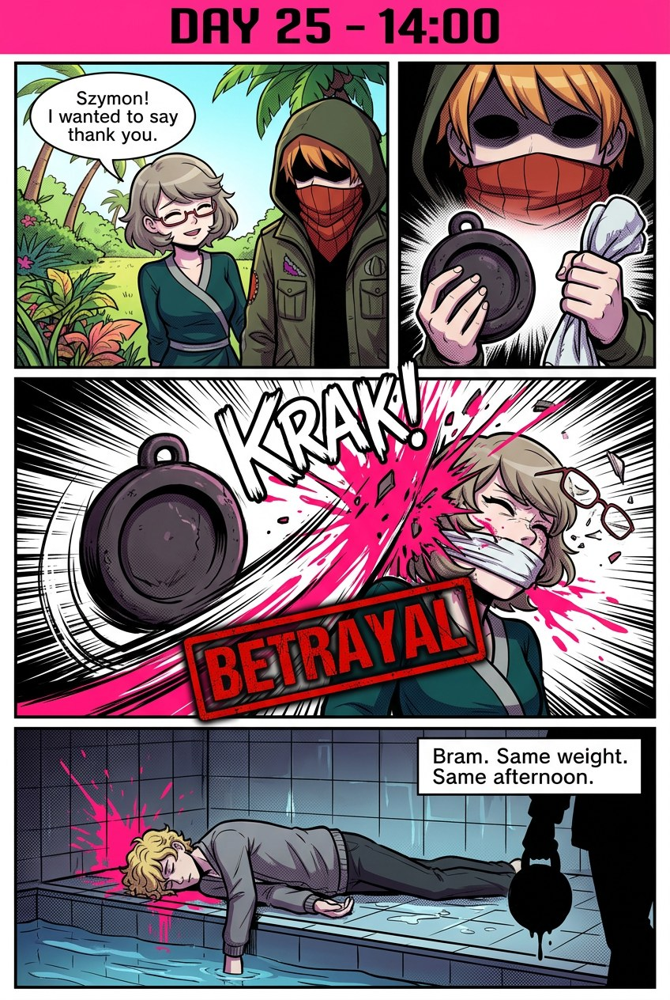
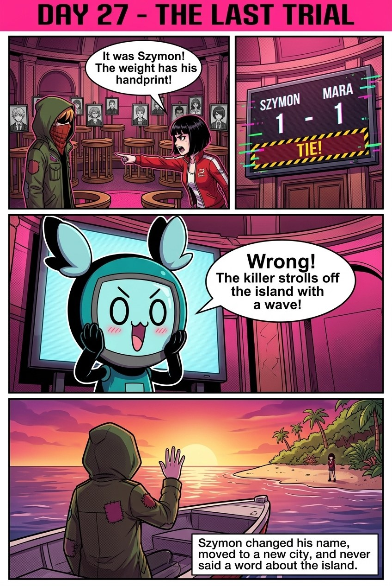

Murder Channel · season seed 13 · default cast · Days 22 to 27
The Diving Weight
Szymon and Chloe kept each other going for weeks. Then, on Day 25, he drowned Kumiko in the bath at ten, and at two he took a diving weight to Chloe, then to Bram. At the last trial the vote tied, and he walked off the island.
Page 1 · Days 22 to 24

He leans on Chloe, and starts plotting.
Page 2 · Day 25, 10:00 · the Bathroom
Not drawn yet. The image model's filter blocked the drowning twice, even shown from behind with only a hand on the tub's edge.
Page 3 · Day 25, 14:00

Chloe, then Bram.
Page 4 · Day 27 · the last trial

A tie, and the killer goes free.
How these were made
Nano Banana 2.1 (developer tier) through Atlas Cloud, one tall 1k image per page, with the cast portraits and the previous page as references.
Mara and Bram have no portraits, so they are drawn from a description.
Prompts are in docs/runs/seed13/comic/strip.json; tools/comic.py makes the pages.